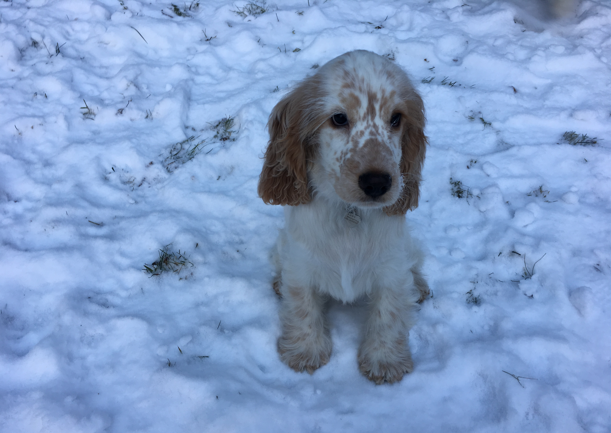

Cockerspaniels are medium sized dogs (about 13-15kg) and you can definitely recognize them from big ears and waving tails. There are many different colors, but popular ones are black, red, blue roan, orange roan and liver. Cockerspaniels are brave, smart and vigilant. They are kind, loyal, playful and loving dogs.
Cockerspaniels are awesome family dogs and they usually love kids if they have change to get to know them. They are also used in hunting specially bird hunting and that's why they are called "bird dogs". These days cockerspaniels are pretty popular dogs and I'm sure that you can find one from your city.